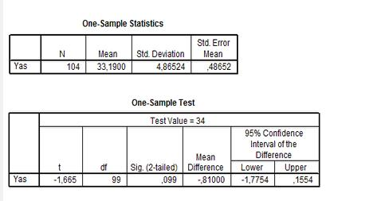
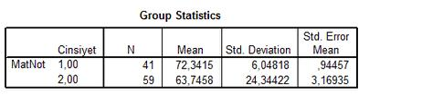
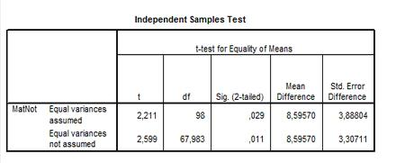
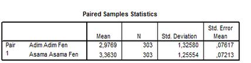
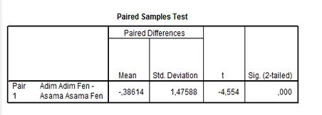

T-Testi Nedir?
T-Testi:
T testi, hipotez testlerinde en yaygın olarak kullanılan yöntemdir. T testi ile iki grubun ortalamaları karşılaştırılarak, aradaki farkın rastlantısal mı, yoksa istatistiksel olarak anlamlı mı olduğuna karar verilir. Küçük örnekleme teorisi olarak da bilinen T dağımı, küçük örneklemlerle de çalışmaya imkan verdiğinden, araştırmacılar için büyük kolaylık sağlamaktadır. "T" testi örnek boyutunun küçük olduğu ve ana kütleye ilişkin standart sapmaların bilinemediği durumlarda "T" dağılımından yararlanarak;
- İncelenen bir değişken açısından bir gruba ait ortalama değerin önceden belirlenen değerden farklı olup olmadığının,
- İncelenen bir değişken açısından bağımsız iki grup arasında fark olup olmadığının,
- İncelenen bir değişken açısından herhangi bir grubun farklı koşullar altındaki tepkilerinde farklılığın olup olmadığının
incelenmesine yönelik hipotezleri test etmeye yönelik olarak geliştirilmiş bir analiz yöntemidir.
Bu nedenle üç tür T testi
bulunmaktadır.
- Tek grup için T Testi (One–Sample T Test)
- Bağımsız gruplar için T Testi (Independent Samples T Test)
- Eşleştirilmiş iki grup için T Testi (Paired Samples T Test)
Tek grup "T"-Testi (One–Sample Test):
Bu test genellikle herhangi bir konuda belirli öngörülerde bulunulduğunda bu öngörünün doğruluk derecesini test etmek amacıyla uygulanır. Örneğin:
- A işletmesinde çalışan 5000 personelin yaş ortalamasının 37 olduğu biliniyor. Rasgele seçilen 500 kişilik örneklemin yaş ortalaması 37'den farklı mıdır?
- Bir üniversitede okuyan öğrencilere günlük harcamalarının ne kadar olduğu soruluyor. Acaba öğrencilerin günlük harcamalarının ortalaması (öngörülen) 10 milyondan farklı mıdır?
Sayısal Örnek :Rock’n Coke konserine 2007 yılında katılan kişilerin yaş ortalamalarının 34,2 olduğu bilinmektedir. Katılımcılar arasında bulunan 104 kişilik Çılgınlar Grubunun yaş ortalaması açısından ana kitlenin (tüm katılımcılar) özelliklerini gösterip göstermediğini bulunuz.
Bu örnek için H0 ve H1 hipotezleri ise şu şekilde formüle edilebilir.
H0 = Rock’n Coke konserine katılan 104 kişilik Çılgınlar Grubu yaş ortalaması açısından diğer katılımcılardan farklı değildir.
H1 = Rock’n Coke konserine katılan 100 kişilik Çılgınlar Grubu, yaş ortalaması açısından diğer katılımcılardan farklıdır.

Sonuç : One Sample Statistics tablosunda 104 kişilik grubumuzun yaş ortalamasının 33,19 olduğu görülmektedir. Bu ortalama kuşkusuz tahminimiz olan 34’,2 den farklıdır. Ancak aradaki farkın istatistiksel olarak anlamlı olup olmadığını belirlemek için One Sample Test tablosundaki Sig. (2-tailed) değerini incelmemiz gerekecektir. Bu değerin 0,05’den küçük olduğu durumlarda H0 hipotezi reddedilirken, 0,05’den büyük olduğu durumlarda H0 hipotezi reddedilemez. Örneğimizde p = 0,099 değeri 0,05’den büyük olduğu için H0 hipotezi reddedilememiş ve analiz sonrasında bulunan 33,19 değeri ile 34,2 değeri arasındaki farkın istatistiksel olarak anlamlı olmadığı, Rock’n Coke konserine katılan 100 kişilik Çılgınlar Grubu’nun yaş ortalaması açısından ana kitleden farklılık göstermediği sonucuna varılmıştır.
Bağımsız iki grup arası farkların testi (Independest Samples "T" test):
Bir araştırmada çoğu kez farklı ana kütleden elde edilen gruplar arasında karşılaştırmalar yapmak gerekir. İşte bu gibi analizler T testi ile yapılır. Örneğin:
- Evli ve bekar deneklerin aylık harcamaları arasında anlamlı bir farklılık var mıdır?
- Yönetici ve personelin işletmedeki çalışma ortamına ilişkin görüşleri arasında anlamlı bir farklılık var mıdır?
- Yerli ve yabancı turistlerin müşteri tatminine ilişkin görüşleri arasında anlamlı bir farklılık var mıdır?
Sayısal Örnek :Bir sınıfta kız ve erkek öğrencilerin matematik dersinden aldıkları notlar arasında anlamlı bir fark var mıdır?
Bu örnek için H0 ve H1 hipotezleri ise şu şekilde formüle edilebilir.
H0 = Kız ve erkek öğrencilerin matematik dersinden aldıkları notlar arasında anlamlı bir fark yoktur.
H1 = Kız ve erkek öğrencilerin matematik dersinden aldıkları notlar arasında anlamlı bir fark vardır.
Tabloda kızların ortalamasının erkeklerden daha yüksek olduğu görülmektedir. Ancak bu farkın rastlantısal mı yoksa gerçek bir başarının göstergesi mi olduğunu belirleyebilmek için Independent Samples Test tablosunu incelememiz gerekir

Independent Samples Test tablosunun Sig. (Anlamlılık) sütunundaki değerin 0,29 olduğu görülmektedir. Söz konusu değer 0,05’den küçük olduğu için, cinsiyet ile matematik dersi başarısı arasındaki ilişkinin p < 0,05 düzeyinde istatistiksel olarak anlamlı olduğunu söyleyebiliriz.
Sonuç :Örneğimizde t-testi sonuçları ve gruplara ait ortamlalar birlikte değerlendirildiğinde, H0 hipotezi reddedilmiş ve kız öğrencilerin matematik dersinde erkelerden daha başarılı olduğu sonucuna ulaşılmıştır.

Eşleştirilmiş iki grup arasındaki farkların testi (Paired-Samples "T" testi):
Bağımsız iki grup için farkların testi konusu incelenirken grupların birbirlerinden bağımsız evrenlerden geldiği varsayımı kabul edilmekte idi. Ancak özellikle kontrollü ve deneysel çalışmalarda aynı deneklerin farklı durumlarda nasıl davrandıklarının incelenmesine gerek duyulabilir. Amaç farklı iki koşulda elde edilen sonuçların farklı olup olmadığını araştırmaktır. İlişkili ölçümler için (bağımlı durum) T testi aşağıda özetlenen 3 durum için kullanılabilir.
Birinci Durum: Bir grubun veya örneklemin iki bağımlı değişkene ilişkin ortalamalarının karşılaştırılarak ortalamalar arasındaki farkın belirli bir güven düzeyinde anlamlı (önemli) olup olmadığını test etmek için kullanılır. Örneğin:
- İşletme yöneticilerinin personel motivasyonu konusunda X uygulamaya ilişkin görüşleri ile Y uygulamaya ilişkin görüşleri arasındaki fark önemli midir?
- Öğretim yöntemleri konusunda öğretmenlerin, A yöntemine ilişkin görüşleri ile B yöntemine ilişkin görüşleri arasında anlamlı bir farklılık var mıdır?
İkinci Durum: Bir grubun veya örneklemin bir değişkene ait iki farklı zamandaki ölçümlerine ilişkin ortalamalarının karşılaştırılarak söz konusu ortalamalar arasındaki farkın belirli bir güven düzeyinde önemli olup olmadığını test etmek için kullanılır. Tekrarlı ölçümler ile iki ortalamanın karşılaştırıldığı bu duruma tipik örnek araştırılmalarda uygulanan ön test-son test modelidir. Örneğin:
- Öğrencilerin bilgisayar kursu almadan önce yapılan sınavdan aldıkları puanlar ile bilgisayar kursu aldıktan sonra yapılan sınavdan aldıkları puanlar arasında anlamlı bir farklılık var mıdır? (Bilgisayar kursu öğrenciler üzerinde etkili olmuş mudur?)
- Seçimde parti faaliyetleri ile ilgili yapılan kamuoyu yoklamalarında, halkın propaganda öncesi görüşleri ile propaganda sonrası görüşleri arasında anlamlı bir farklılık var mıdır?
Üçüncü Durum: Bazı araştırmaların uygulamasının aynı örneklem veya denek grubu üzerinde gerçekleşmesi zor ve hatta bazen de (özellikle sağlık ve fen bilimleri alanlarında) imkansızdır. Böyle araştırmalarda araştırma konusu ile ilgili aynı veya benzer özelliklere sahip örneklem kullanılır. Bu durumda, eşleştirilmiş iki grup tek bir grupmuş gibi varsayılarak iki ölçüme ilişkin ortalamalar karşılaştırılır. Burada iki grubun eşleştirilmesi, ölçüm sürecinden önce iki grup arasında ölçüm yapılacak konuda fark olmadığını varsaymak anlamına gelmektedir. Bu duruma, deney ve kontrol grupları üzerinde gerçekleştirilecek ölçümlerin karşılaştırıldığı araştırmalar örnek olarak verilebilir. Başlangıçta deney ve kontrol grupları ölçüm yapılacak konuda farksız (eş) varsayılır, daha sonra deney grubu üzerinde belirli bir işlem gerçekleştirildikten sonra ölçüm yapılır ve bu ölçümler kontrol grubundan elde edilen ölçümlerle karşılaştırılır. İki ölçüm ortalaması arasındaki farkın belirli bir güven düzeyinde önemli olup olmadığı bu test ile belirlenir. Örneğin:
- Aynı davranış bozukluğu içerisindeki deneklerin bir kısmı (deney grubu) yetkililer tarafından X işlemine tabi tutulurken diğer deneklere (kontrol grubu) ise hiçbir işlem uygulanmıyor. Bu iki grubun davranışları ile ilgili ölçümler arasında anlamlı bir farklılık var mıdır?
- 30 ikizden oluşan 60 çocuk arasından ikizler ayrılarak 30 çocuğa farklı bir gelişim programı uygulanıyor. Çocukların gelişimlerine ilişkin ölçümler arasında anlamlı bir farklılık var mıdır?
Sayısal Örnek :Fen bilgisi öğretmenlerinin, “Adım Adım Fen Bilgisi” yardımcı kitabı ile “Aşama Aşama Fen Bilgisi” yardımcı kitabının etkiliğine ilişkin görüşleri arasında fark var mıdır?
Bu örnek için H0 ve H1 hipotezleri ise şu şekilde formüle edilebilir.
H0 = Fen bilgisi öğretmenlerinin “Adım Adım Fen Bilgisi” yardımcı kitabı ile “Aşama Aşama Fen Bilgisi” yardımcı kitabının etkiliğine ilişkin görüşleri arasında fark yoktur.
H1 = Fen bilgisi öğretmenlerinin “Adım Adım Fen Bilgisi” yardımcı kitabı ile “Aşama Aşama Fen Bilgisi” yardımcı kitabının etkiliğine ilişkin görüşleri arasında fark vardır.

Paired Samples Test tablosunun Sig. (Anlamlılık) sütunundaki değerin 0,00 olduğu görülmektedir. Söz konusu değer 0,01’den küçük olduğu için, Asama Asama Fen yardımcı kitabı ile Adım Adım Fen yardımcı kitabının etkinliği arasındaki farkın p < 0,01 düzeyinde istatistiksel olarak anlamlı olduğunu söyleyebiliriz.

Sonuç : Örneğimizde t-testi sonuçları ve gruplara ait ortamlalar birlikte değerlendirildiğinde, H0 hipotezi reddedilmiş ve fen bilgisi öğretmenlerinin “Aşama Aşama Fen Bilgisi” kitabının etkinliğinin “Adım Adım Fen Bilgisi” kitabının etkinliğinden daha yüksek olduğu görüşünü taşıdıkları sonucuna varılmıştır.